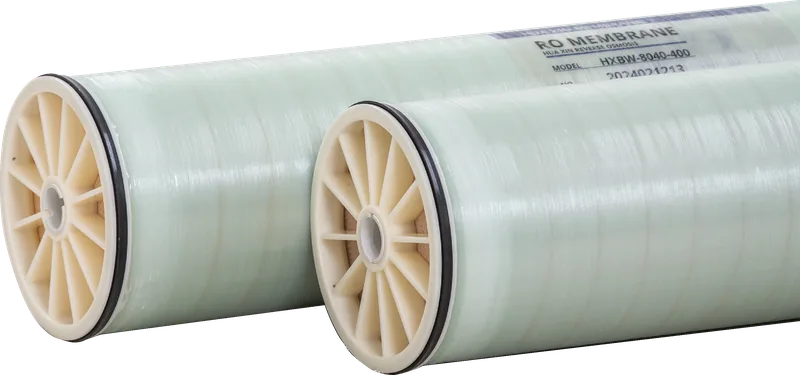

مجموعة المنتجات
أغشية لكل مرحلة من مراحل سلسلة المياه.
تسعة خطوط منتجات: خمسة للتناضح العكسي واثنان للترشيح النانوي، إضافة إلى وحدات MBR والترشيح الفائق العمودي. تتوفر عناصر التناضح العكسي والترشيح النانوي بمقاسي 4040 و8040 القياسيين.

ضغط منخفض جدًا

عنصر تناضح عكسي بضغط منخفض جدًا
تدفق نفاذ عالٍ عند ضغط تشغيل منخفض جدًا، لمياه تغذية أقل من 1,000 ppm.
ضغط منخفض

عنصر تناضح عكسي منخفض الضغط
تناضح عكسي موفّر للطاقة وعالي النفاذ لمياه تغذية دون 2,000 ppm، ويتحمّل التنظيف الحمضي والقلوي المتكرر.
المياه قليلة الملوحة

عنصر تناضح عكسي للمياه قليلة الملوحة
تناضح عكسي صناعي عالي الرفض لمياه تغذية دون 5,000 ppm، مع تحمّل واسع لدرجات pH وسهولة في التنظيف.
مقاوم للاتساخ

عنصر تناضح عكسي مقاوم للاتساخ
تناضح عكسي مقاوم للتلوث للمياه قليلة الملوحة عالية الاتساخ دون 5,000 ppm، مُثبت ميدانيًا على مدى 693 يومًا في إعادة استخدام مياه المناجم.
مياه البحر

عنصر تناضح عكسي لتحلية مياه البحر
تناضح عكسي عالي الرفض وعالي التدفق لمياه تغذية تتجاوز 10,000 ppm. لا تُستخدم معالجة لاحقة مؤكسِدة لرفع الأداء الأولي.
مياه الشرب

عنصر ترشيح نانوي لمياه شرب عالية الجودة
ترشيح نانوي عالي التدفق للتنقية العميقة للمياه البلدية السطحية أو مياه الآبار، مع الاحتفاظ بالمعادن المفيدة للمذاق.
فصل الأملاح الصناعي
عنصر ترشيح نانوي لفصل الأملاح الصناعي
ترشيح نانوي عالي الانتقائية يحتجز المواد العضوية الأكبر من 200 Da والأملاح ثنائية التكافؤ، ويسمح بمرور جزء من الأملاح أحادية التكافؤ.
مفاعل حيوي غشائي

وحدة مفاعل حيوي غشائي (MBR)
وحدات بإطار من الفولاذ المقاوم للصدأ وبمسافة تزيد على 100 mm بين صفائح الأغشية، للمعالجة البيولوجية البلدية والصناعية.
ترشيح فائق عمودي
وحدة ترشيح فائق (UF) عمودية
أعمدة ترشيح فائق من ألياف PVDF المجوفة بمسام أقل من 30 nm، لتنقية المياه ومعالجة مياه الصرف.
أداة اختيار المنتج
ابدأ من مياهك.
ثلاث خطوات تعتمد على نطاقات التغذية والتطبيقات والطرازات المذكورة في دليل منتجات HUAXIN. النتيجة نقطة انطلاق، أما حجم النظام الفعلي فتحدده مراجعة التصميم والتكلفة.
المقارنة
عناصر التناضح العكسي والترشيح النانوي جنبًا إلى جنب.
تُقاس القيم وفق ظروف الاختبار الخاصة بكل منتج. قارن أرقام الرفض فقط إلى جانب الظروف التي أنتجتها.
| المنتج | النوع | ملوحة مياه التغذية | الرفض المستقر | مقيس عند | الطرازات |
|---|---|---|---|---|---|
| HX-XLP | RO | < 1,000 ppm | 99.0% | 500 ppm من NaCl، 100 psi (0.69 MPa)، 25 °C، استرداد 15%، pH 7–8 | 4040-100 · 8040-400 · 8040-440 |
| HX-LP | RO | < 2,000 ppm | 99.3% | 1,500 ppm من NaCl، 150 psi (1.03 MPa)، 25 °C، استرداد 15%، pH 7–8 | 4040-100 · 8040-400 · 8040-440 |
| HX-BW | RO | < 5,000 ppm | 99.5% | 2,000 ppm من NaCl، 225 psi (15.5 bar)، 25 °C، استرداد 15%، pH 7–8 | 4040-100 · 8040-400 · 8040-440 |
| HX-BWFR | RO | < 5,000 ppm، اتساخ عالٍ | 99.5% | 2,000 ppm من NaCl، 225 psi (15.5 bar)، 25 °C، استرداد 15%، pH 7–8 | 4040-100 · 8040-400 |
| HX-SW | RO | > 10,000 ppm | 99.7% | 32,000 ppm من NaCl، 800 psi (5.5 MPa)، 25 °C، استرداد 8%، pH 7–8 | 4040-100 · 8040-400 · 8040-440 |
| HX-HQ | NF | مياه بلدية سطحية أو مياه آبار | > 90% | 2,000 ppm من NaCl، 100 psi (6.9 bar)، 25 °C، استرداد 15%، pH 7–8 | 4040-100 · 8040-400 · 8040-440 |
| HX-BM | NF | تيارات العمليات الصناعية | 98% MgSO₄ | 2,000 ppm من NaCl / MgSO₄، 100 psi (6.9 bar)، 25 °C، استرداد 15%، pH 7–8 | 4040-100 · 8040-400 · 8040-440 |
رفض HX-BM هو لـ MgSO₄ (و NaCl بين 5 و30%). قد يختلف تدفق النفاذ لكل عنصر ضمن ±20% (HX-BM: لا يقل بأكثر من 15% عن القيمة المذكورة).
رموز الطرازات
اقرأ أي رمز لعنصر HUAXIN.
مثال: HX-BW-8040-400
تحدّث إلى مهندس
لست متأكدًا من العنصر المناسب؟
شارك تحليل مياه التغذية والتدفق وأهداف الاسترداد، وسيؤكد مهندسو HUAXIN الخط والطراز المناسبين.